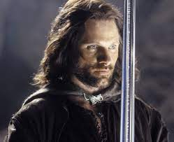

|  |
Aragorn, also known as Strider, is a skilled ranger and the true heir to the throne of Gondor. He's a brave and noble leader who plays a crucial role in the quest to destroy the One Ring. He's known for his strength, leadership, and his love for Arwen. |